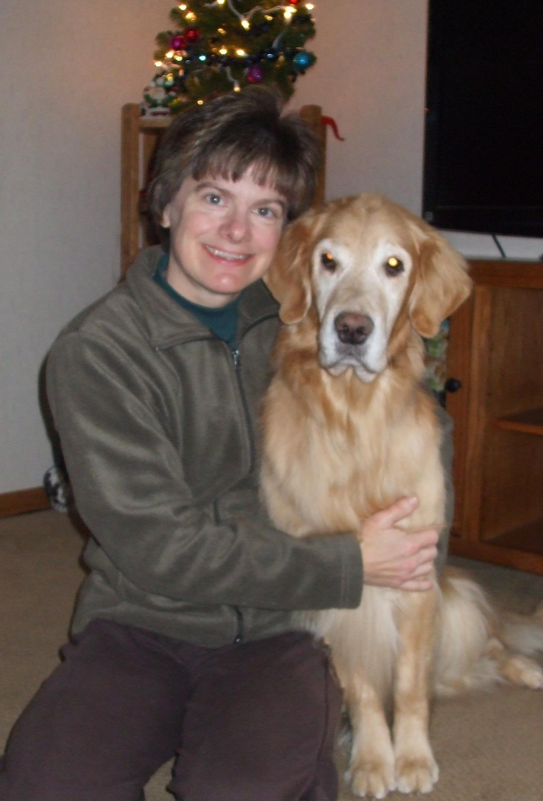

Treasure was owned and trained by Jessica Hanson who trained and showed her as a junior handler. Treasure competed in Agility, Obedience, Rally, Junior Showmanship, breed competition, and tracking. She was also a Therapy Dog.
She obtained her MACH, UDX and RAE titles. She won two 1st places in Rally at the Golden Retriever Club of America National Specialties, one in 2005 and one in 2008.
Treasure won 1st place in Preferred Excellent Jumpers with Weaves at the 2010 GRCA National Specialty, and 1st place in Preferred Novice FAST (16").
She also had points towards her AKC Obedience Trial Championship. Jessica was the first Junior Handler to put a Utility Dog title on a dog of any breed.
She was a Canadian Champion and Canadian Obedience Trial Champion.
Jessica and Treasure competed in Junior Showmanship at the Westminster Kennel Club in 2006. The were ranked #9 all-breed in the country for Junior Showmanship in 2007. Jessica and Treasure were ranked #1 in the country in 2007 for Golden Retrievers for Junior Handler. They were ranked #1 all-breed in Minnesota for several years. They won multiple Champion awards at the Minnesota State 4-H Dog Shows.
Jessica and Treasure competed in musical freestyle events. They won first place at the Golden Retriever Club of America National Specialty in 2006 in the novice division.
Treasure was a dog model, and did dozens of photo shoots for Target, Best Buy, Blue Cross Blue Shield, 3M, Cargil and many other companies.
She appeared in a nationally-broadcast tv commercial for Dr. Foster and Smith, and was in an informercial for Sunsetter Awnings.
 She was truly an amazing dog, a wonderful companion, and now the star of a book!